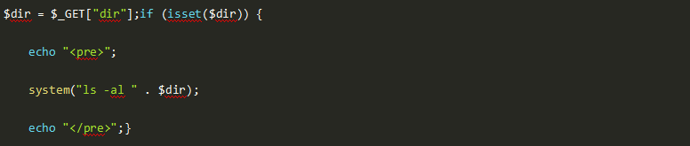

一、单选题（共28题，每题5分）
1.Apache与Nginx大访问下性能描述正确的是？
A、Apache所采用的epoll网络I/O模型非常高效
B、Nginx使用了最新的kqueue和select网络I/O模型
C、Apache进程执行PHP、输出HTML都得干，占用的资源多
D、nginx不可以做反向代理服务器
参考答案：C
答案解析：1、Apache所采用的select网络I/O模型非常低效 2、Nginx使用了最新的epoll（Linux 2.6内核）和kqueue（freebsd）网络I/O模型 3、Apache进程干的事情多：执行PHP、输出HTML都得干，占用的资源就多（CPU、内存）
2.下列哪种PHP运行模式在PHP5.3之后不再支持？
A、CGI
B、FASTCIG
C、ISIPA
D、CLI
参考答案：C
答案解析：在PHP5.3以后，PHP不再有ISAPI模式，安装后也不再有php5isapi.dll这个文件。要在IIS6上使用高版本PHP，必须安装FastCGI扩展，然后使IIS6支持FastCGI。
3.yii小部件描述错误的是？
A、小部件是面向对象方式来重用视图代码
B、创建小部件时仍需要遵循 MVC 模式，通常逻辑代码在小部件类，展示内容在视图中
C、小部件设计时应不是独立的，也就是说使用一个小部件时候，不可以直接丢弃它而不需要额外的处理
D、当小部件需要外部资源如 CSS, JavaScript图片等会比较棘手幸运的时候 Yii 提供资源包来解决这个问题。
参考答案：C
答案解析：小部件设计时应是独立的，也就是说使用一个小部件时候，可以直接丢弃它而不需要额外的处理。
4.以下关于结构型模式说法错误的是？
A、结构型模式可以在不破坏类封装性的基础上，实现新的功能
B、结构型模式主要用于创建一组对象
C、结构型模式可以创建一组类的统一访问接口
D、结构型模式可以在不破坏类封装性的基础上，使得类可以同不曾估计到的系统进行交互
参考答案：B
答案解析：结构型（structural）：处理类或对象间的组合。
5是PHP魔术方法的是？
A、__function
B、__to
C、__line
D、__invoke
参考答案：D
答案解析：__construct __destruct __call __callStatic __get __set __isset __clone __unset __sleep __wakeup __toString __invoke __set_state
6.substr函数的作用是？
A、查找字符串
B、替换字符串
C、截取字串
D、截取长度
参考答案：C
答案解析：截取字符串的部分字符串。
7.以下的哪一个数据库产品是采用了 pureXML技术的数据服务器：
A、SQL Server
B、DB2
C、MySQL
D、JSON
参考答案：B
答案解析：暂无
8.作为一个管理员，你希望在每一个新用户的目录下放一个文件.bashrc， 那么你应该在哪个目录下放这个文件，以便于新用户创建主目录时自动将这个文件复制到自己的目录下。
A、/etc/skel/
B、/etc/default/
C、/etc/defaults/
D、/etc/profile.d/
参考答案：A
答案解析：/etc/skel/目录是用来存放新用户配置文件的目录，当我们添加新用户的时候，这个目录下的所有文件会自动被复制到新添加的用户的家目录下。 这个目录下的所有文件都是隐藏文件（以.点开头的文件）。
9.在MySQL中，可用于创建一个新数据库的SQL语句为（）
A、CREATE DATABASE
B、CREATE TABLE
C、CREATE DATABASES
D、CREATE DB
参考答案：A
答案解析：
A选项正确，创建库语句为：CREATE DATABASE 数据库名。
B选项CREATE TABLE,是创建表的语句。
C和D选项语法错误。
10.关于判断文件类型，以下说法正确的是？
A、根据文件的扩展名可以正确判断文件的类型
B、根据文件的特征值可以正确判断文件类型
C、根据文件的大小及特征值可以正确判断文件类型
D、通过任何方法也无法100%确定文件类型
参考答案：D
答案解析：任何方式都可以伪造，所以我们只能通过方法无限接近，而无法完全保证可以判断正确。
很多人在刚接触这个行业的时候或者是在遇到瓶颈期的时候，总会遇到一些问题，比如学了一段时间感觉没有方向感，不知道该从那里入手去学习，对此我整理了一些资料，需要的可以免费分享给大家（11年架构师带你解读年薪50万面试通关秘籍。）
如果喜欢我的文章，想与一群资深开发者一起交流学习的话，获取更多相关大厂面试咨询和指导，欢迎加入我的学习交流群点击此处PHP高级交流
11.在mysql中用a,b,c三个字段建立一个复合索引a_b_c,请问以下哪个查询效率最差？
A、select * from test where a=10 and b>50
B、select * from test where a=10 and b>10 order by c
C、select * from test where a=10 and b=10 order by a
D、select * from test where a=10 and b = 10 order by c
参考答案：B
答案解析：最左匹配原则：该复合索引包含a,a_b,a_b_c。 复合索引只有在前面的字段为精确查询时，才会用上后面的复合索引，一旦出现不精确查询，则不会使用复合索引。 A选项中，使用a_b索引。 B选项中，使用了a_b索引，且有order by c故效率最差。 C选项中，使用a_b索引。 D选项中，使用a_b_c索引。
12.关于PHP数组key和value的限制条件，说法正确的是？
A、key只能是int或string类型，value可以使任何类型
B、key可以是任何类型，value可以是任何类型
C、key可以是任何类型，value只能是int或string类型
D、key只能是int或string类型，value只能是int或string类型
参考答案：A
答案解析：key只能是int或string类型，value可以使任何类型.。
13.以下代码有什么漏洞？

A、没有漏洞
B、适当用规则可删除服务器全部文件
C、适当用规则可获取想要的任何文件内容
D、适当用规则可以更改管理员密码
参考答案：C
答案解析：如果我们提交 demo.php?dir=| cat /etc/passwd 则可以获取服务器上所有管理员的账户信息。
14.以下shell代码描述正确的是？
read -p "please input ip:" IPping $IP -w &> /dev/null && echo $IP is up || echo $IP is down
A、查询本机ip
B、查找访问该服务器的ip
C、通过ip查找访问文件
D、通过输入IP判断主机是否关机
参考答案：D
答案解析：read -p "please input ip:" IP 提示输入要判断主机的ip ping $IP -w &> /dev/null && echo $IP is up || echo $IP is down ：ping 该ip判断是否已关机。
15.以下哪个模式是利用一个对象，快速地生成一批对象？
A、抽象工厂（Abstract Factory）模式
B、合成（Composite）模式
C、原型（Prototype）模式
D、桥接（Bridge）模式
参考答案：C
答案解析：原型模式：利用原型实例来“克隆”创建新的对象。
16.一个汉字在计算机内部保存的编码是？
A、区位码
B、国标码
C、机内码
D、机器码
参考答案：C
答案解析：机内码是一个汉字在计算机内部保存的编码。
17.一下哪个不是PHP的运行模式？
A、CGI
B、FastCGI
C、apache2handler
D、apache
参考答案：D。答案解析：前三个是常用的运行模式，apache是web服务器软件。
18.关于PHP模式修饰符说法错误的是？
A、i 大小写不敏感匹配
B、m ^将只匹配字符串的开头
C、x 空白和#注释将被忽略
D、将替换后的字符串作为php代码评估执行
参考答案：B
答案解析：m为增强的行锚点模式，\\n的前后也会被认为结束和开始。
19.挑出来一个与众不同的命令
A、vi
B、vim
C、ll
D、nano
参考答案：C
答案解析：vi，vim和 nano都是编辑器，用于编辑文档，而ll是显示目录下的文件信息。
20.以下哪个函数不是PHP的文件指针操作？
A、ftell()
B、fseek()
C、file()
D、feof()
参考答案：C
答案解析：ftell() 返回文件指针位置 fseek() 在文件指针中定位 feof() 测试文件指针是否在结尾。
21.关于php配置选项错误的是
A、开启 short_open_tag 允许使用PHP 代码开始标志的缩写形式（<? ?>）
B、如果启用了 magic_quotes_runtime，大多数返回任何形式外部数据的函数，包括数据库和文本段将会用反斜线转义引号
C、因为可以在运行时使用ini_set对配置选项进行设置，所以display_errors可以一直开启
D、PHP 的安全模式是为了试图解决共享服务器（shared-server）安全问题而设立的
参考答案：C
答案解析：尽管 display\_errors 也可以在运行时设置 (使用 ini\_set())， 但是脚本出现致命错误时任何运行时的设置都是无效的。 因为在这种情况下预期运行的操作不会被执行。这样将会暴露敏感信息。
22 题6.3个不同元素依次进栈，有（）不同的出栈序列
A、A、4
B、B、5
C、C、6
D、D、7
参考答案：B
答案解析：对于n个不同的元素进栈，出栈序列的个数为6\*5\*4/4\*3\*2\*1为5，也就是卡特兰数。
23.与 HTTP1.0 相比，HTTP1.1 的优点不包括（ ）
A、减少了 RTTs 数量
B、支持持久连接
C、减少了 TCP 慢启动次数
D、提高了安全性
参考答案：D
答案解析：HTTP 1.1优化了HTTP1.0的缺点，从而可以支持久连接，在一个TCP连接上可以传送多个HTTP请求和响应，减少了建立和关闭连接的消耗和延迟即减少了 TCP 慢启动次数，同时允许客户端不用等待上一次请求结果返回，就可以发出下一次请求，减少了 RTTs 数量以及下载过程所需要的时间，HTTP 1.1还提供了与身份认证、状态管理和Cache缓存等机制相关的请求头和响应头。然而在安全性能并不是HTTP1.1的特点，不过使用HTTPS解决了HTTP的安全问题，即安全的超文本传输协议（SHTTP）.
24.下面有关内核线程和用户线程说法错误的是？
A、用户线程因<br>I/O 而处于等待状态时，整个进程就会被调度程序切换为等待状态，其他线程得不到运行的机会
B、内核线程只运行在内核态，不受用户态上下文的影响
C、用户线程和内核线程的调度都需要经过内核态
D、内核线程有利于发挥多处理器的并发优势，但却占用了更多的系统开支
参考答案：C
答案解析：用户线程不需要，不然golang就没有存在的意义了。
25.以下关于引用说法错误的是？
A、引用不是C的指针
B、引用不允许用两个变量来指向同一个内容
C、用引用可以传递变量
D、可以将一个变量通过引用传递给函数，这样该函数就可以修改其参数的值。
参考答案：B
答案解析：引用是允许用两个变量来指向同一个内容的。
26.以下代码输出的结果是？
A、1
B、2
C、3
D、4
参考答案：A
答案解析：考察运算符优先级， 题目$a=(2>2)?2:3?++$a:--$a; 相当于$a=(2>2)?2:(3?++$a:--$a); 先计算括号内的运算 得出结果1.
27.以下代码执行结果是？
A、0
B、1
C、2
D、3
参考答案：B
答案解析：如果你回答 2 ，恭喜，你掉入陷阱了。 其实这道题主要考两点，第一点是static静态类型。这种的值永远都是静态的，第一次调用声明等于0，并且自增等于1。第二次调用，1再自增就等于2。但其实这里还有一道陷阱，那就是++a与a++的区别，前++是先自增，后++是先返回值再自增，所以结果等于 1。
28.PHP执行的时候有如下执行过程：Scanning(Lexing) - Compilation - Execution - Parsing，其含义分别为：
A、将PHP代码转换为语言片段(Tokens)、将Tokens转换成简单而有意义的表达式、顺次执行Opcodes、将表达式编译成Opocdes
B、将PHP代码转换为语言片段(Tokens)、将表达式编译成Opocdes、顺次执行Opcodes、将Tokens转换成简单而有意义的表达式
C、将PHP代码转换为语言片段(Tokens)、将Tokens转换成简单而有意义的表达式、将表达式编译成Opocdes、顺次执行Opcodes
D、将PHP代码转换为语言片段(Tokens)、将表达式编译成Opocdes、将Tokens转换成简单而有意义的表达式、顺次执行Opcodes
参考答案：C
答案解析：
正确答案为C
1.Scanning(Lexing) ,将PHP代码转换为语言片段(Tokens)
2.Parsing, 将Tokens转换成简单而有意义的表达式
3.Compilation, 将表达式编译成Opocdes
4.Execution, 顺次执行Opcodes，每次一条，从而实现PHP脚本的功能。
二、多选题（共1题，每题5分）
1.在MYSQL中，关于HASH索引，下列描述正确的是？
A、如果将一个MYISAM表改为HASH索引的MEMORY表，不会影响查询的执行效率
B、只用于使用=或者<=>操作符的等式比较
C、优化器不能使用HASH索引来加速Order By操作
D、只能使用整个关键字来搜索一行
参考答案：B,C,D
答案解析：
A 效率会降低。 简单地说，哈希索引就是采用一定的哈希算法，把键值换算成新的哈希值，检索时不需要类似B+树那样从根节点到叶子节点逐级查找，只需一次哈希算法即可立刻定位到相应的位置，速度非常快。 B+树索引和哈希索引的明显区别是： 如果是等值查询，那么哈希索引明显有绝对优势，因为只需要经过一次算法即可找到相应的键值；当然了，这个前提是，键值都是唯一的。如果键值不是唯一的，就需要先找到该键所在位置，然后再根据链表往后扫描，直到找到相应的数据； 从示意图中也能看到，如果是范围查询检索，这时候哈希索引就毫无用武之地了，因为原先是有序的键值，经过哈希算法后，有可能变成不连续的了，就没办法再利用索引完成范围查询检索； 同理，哈希索引也没办法利用索引完成排序，以及like ‘xxx%’ 这样的部分模糊查询（这种部分模糊查询，其实本质上也是范围查询）； 哈希索引也不支持多列联合索引的最左匹配规则； B+树索引的关键字检索效率比较平均，不像B树那样波动幅度大，在有大量重复键值情况下，哈希索引的效率也是极低的，因为存在所谓的哈希碰撞问题。